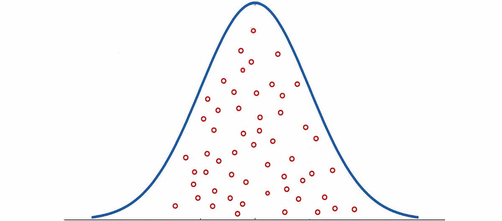

Every ten years, the U.S. government conducts a census—a count of
every person living in the country—as required by the constitution.
It’s a massive undertaking.
The Census Bureau sends a letter or a worker to every U.S.
household and tries to gather data that will allow each person to
be counted. After the data are gathered, they have to be processed,
tabulated and reported. The entire operation takes years of
planning and billions of dollars, which begs the question: Is
there a better way?
As it turns out, there is.
Instead of contacting every person in the population, researchers
can answer most questions by sampling people. In fact, sampling is
what the Census Bureau does in order to gather detailed information
about the population such as the average household income, the
level of education people have, and the kind of work people do for
a living. But what, exactly, is sampling, and how does it work?
At its core, a research sample is like any other sample: It’s a
small piece or part of something that represents a larger whole.
So, just like the sample of glazed salmon you eat at Costco or the
double chocolate brownie ice cream you taste at the ice cream shop,
behavioral scientists often gather data from a small group
(a sample) as a way to understand a larger whole (a population).
Even when the population being studied is as large as the
U.S.—about 330 million people—researchers often need to sample
just a few thousand people in order to understand everyone.
Now, you may be asking yourself how that works. How can
researchers accurately understand hundreds of millions of people
by gathering data from just a few thousand of them? Your answer
comes from Valery Ivanovich Glivenko and Francesco Paolo Cantelli.
Glivenko and Cantelli were mathematicians who studied probability.
At some point during the early 1900s, they discovered that several
observations randomly drawn from a population will naturally take
on the shape of the population distribution. What this means in
plain English is that, as long as researchers randomly sample from
a population and obtain a sufficiently sized sample, then the
sample will contain characteristics that roughly mirror those of
the population.

Figure 1. The blue line represents a normal distribution, also
commonly known as a bell curve. Each red circle represents an
observation, or a person sampled from the population. If each
observation is selected randomly, then the sample will naturally
reflect the qualities of the population. Thanks to this quality of
probability, researchers are able to understand large populations
by sampling small groups from the population.
“Ok. That’s great,” you say. But what does it mean to randomly
sample people, and how does a researcher do that?
Random sampling occurs when a researcher ensures every member of
the population being studied has an equal chance of being selected
to participate in the study. Importantly, ‘the population being
studied’ is not necessarily all the inhabitants of a country or a
region. Instead, a population can refer to people who share a
common quality or characteristic. So, everyone who has purchased a
Ford in the last five years can be a population and so can
registered voters within a state or college students at a city
university. A population is the group that researchers want to
understand.
In order to understand a population using random sampling,
researchers begin by identifying a sampling frame—a list of all
the people in the population the researchers want to study. For
example, a database of all landline and cell phone numbers in the
U.S. is a sampling frame. Once the researcher has a sampling frame,
he or she can randomly select people from the list to participate
in the study.
However, as you might imagine, it is not always practical or even
possible to gather a sampling frame. There is not, for example, a
master list of all the people who use the internet, purchase coffee
at Dunkin’, have grieved the death of a parent in the last year, or
consider themselves fans of the New York Yankees. Nevertheless,
there are very good reasons why researchers may want to study
people in each of these groups.
When it isn’t possible or practical to gather a random sample,
researchers often gather a non-random sample. A non-random sample
is one in which every member of the population being studied does
not have an equal chance of being selected into the study.
Because non-random samples do not select participants based on
probability, it is often difficult to know how well the sample
represents the population of interest. Despite this limitation, a
wide range of behavioral science studies conducted within academia,
industry and government rely on non-random samples. When
researchers use non-random samples, it is common to control for any
known sources of sampling bias during data collection. By
controlling for possible sources of bias, researchers can maximize
the usefulness and generalizability of their data.
Everyone who has ever worked on a research project knows that resources are limited; time, money and people never come in an unlimited supply. For that reason, most research projects aim to gather data from a sample of people, rather than from the entire population (the census being one of the few exceptions). This is because sampling allows researchers to:
Contacting everyone in a population takes time. And, invariably, some people will not respond to the first effort at contacting them, meaning researchers have to invest more time for follow-up. Random sampling is much faster than surveying everyone in a population, and obtaining a non-random sample is almost always faster than random sampling. Thus, sampling saves researchers lots of time.
he number of people a researcher contacts is directly related to
the cost of a study. Sampling saves money by allowing researchers
to gather the same answers from a sample that they would receive
from the population.
Non-random sampling is significantly cheaper than random sampling,
because it lowers the cost associated with finding people and
collecting data from them. Because all research is conducted on a
budget, saving money is important.
Sometimes, the goal of research is to collect a little bit of data from a lot of people (e.g., an opinion poll). At other times, the goal is to collect a lot of information from just a few people (e.g., a user study or ethnographic interview). Either way, sampling allows researchers to ask participants more questions and to gather richer data than does contacting everyone in a population.
Efficient sampling has a number of benefits for researchers. But just
as important as knowing how to sample is knowing where to sample. Some
research participants are better suited for the purposes of a project
than others. Finding participants that are fit for the purpose of a
project is crucial, because it allows researchers to gather high-quality
data.
For example, consider an online research project. A team of researchers who
decides to conduct a study online has several different sources of participants
to choose from. Some sources provide a random sample, and many more provide a
non-random sample. When selecting a non-random sample, researchers have several
options to consider. Some studies are especially well-suited to an online panel
that offers access to millions of different participants worldwide. Other studies,
meanwhile, are better suited to a crowdsourced site that generally has fewer
participants overall but more flexibility for fostering participant engagement.
To make these options more tangible, let’s look at examples of when researchers might
use different kinds of online samples.
Academic researchers gather all kinds of samples online. Some projects require random samples based on probability sampling methods. Most other projects rely on non-random samples. In these non-random samples, researchers may sample a general audience from crowdsourcing websites or selectively target members of specific groups using online panels. The variety of research projects conducted within academia lends itself to many different types of online samples.
Market researchers often want to understand the thoughts, feelings and purchasing decisions of customers or potential customers. For that reason, most online market research is conducted in online panels that provide access to tens of millions of people and allow for complex demographic targeting. For some projects, crowdsourcing sites, such as Amazon Mechanical Turk, allow researchers to get more participant engagement than is typically available in online panels, because they allow researchers to select participants based on experience and to award bonuses.
Public polling is most accurate when it is conducted on a random sample of the population. Hence, lots of public polling is conducted with nationally representative samples. There are, however, an increasing number of opinion polls conducted with non-random samples. When researchers poll people using non-random methods, it is common to adjust for known sources of bias after the data are gathered.
User testing requires people to engage with a website or product. For this reason, user testing is best done on platforms that allow researchers to get participants to engage deeply with their study. Crowdsourcing platforms are ideal for user testing studies, because researchers can often control participant compensation and reward people who are willing to make the effort in a longer study.